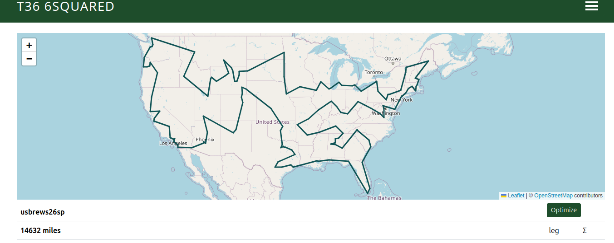
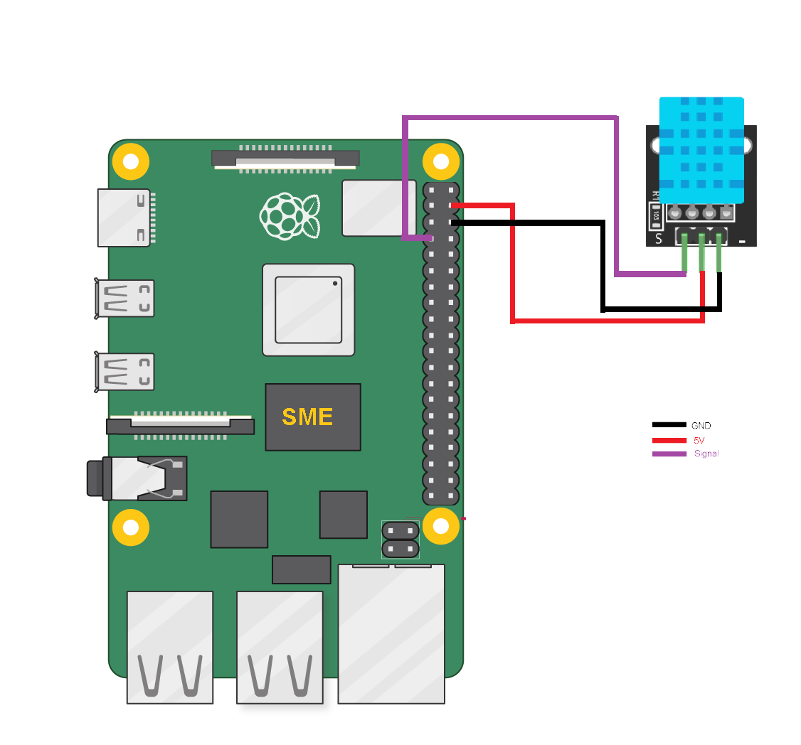
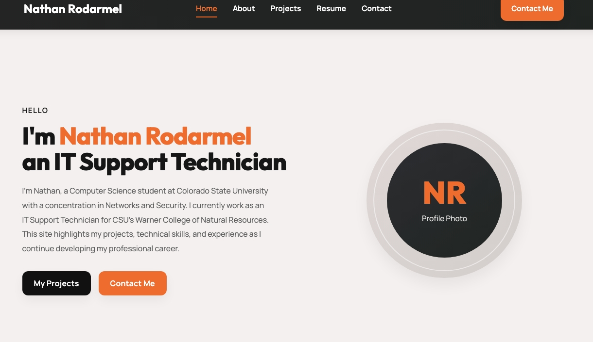
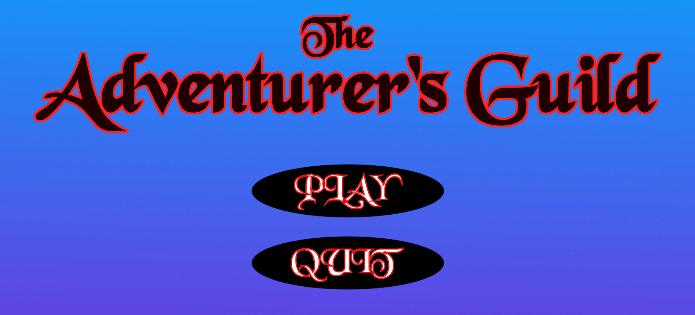

PROJECTS
Coursework Projects
A selection of academic projects demonstrating programming, systems, and problem-solving skills.
CS314 - Software Engineering
As part of a semester-long team software engineering project at Colorado State University, I helped develop a trip planning application that optimized travel routes between destinations while supporting airport search and nearby-airport functionality using Java, REST APIs, MongoDB, Scrum-based Agile development practices, and collaborative GitHub workflows.

Raspberry Pi Temperature & Humidity Monitor
A team project for CS370 Operating Systems at CSU. The system used a DHT11 sensor connected to a Raspberry Pi 4B to collect real-time temperature and humidity readings, which were transmitted over TCP to a desktop application for live visualization. My role was building the desktop GUI client in C++ using the SFML library, including the TCP client connection, real-time data parsing, and a live-updating graphical plot of temperature and humidity trends with color-coded thresholds.

Portfolio Website
Designed and developed this personal portfolio website from scratch using HTML and CSS. The project covered site planning, responsive layout design, accessibility considerations, and publishing to the web. Built as the final project for JTC 372 at Colorado State University.

The Adventurer's Guild
A third-person action-adventure game built in Unity for CS462 Engaging in Virtual Worlds at CSU. The game follows Bob the Knight escaping a satirical corporate dungeon, battling skeleton enemies and a final boss CEO. My role covered the majority of the core gameplay systems. I built the enemy AI using a finite state machine with patrol, chase, attack, and death states driven by Unity's NavMesh, developed the health and damage systems including enemy health bars and hit feedback, and implemented the health power-up system and environmental hazards. The game was built collaboratively by a five-person team using C#, with a low-poly art style, custom music composed in Logic Pro, and custom cutscenes.

Library Media Management System
A solo C++ project for CSC1061 Computer Science II. Built a console-based inventory
system for managing library media including books, movies, video games, and magazines.
Used object-oriented design with a base LibraryItem class and derived
subclasses, file I/O to load inventory from a text file, and a menu-driven interface
for searching and managing the collection.